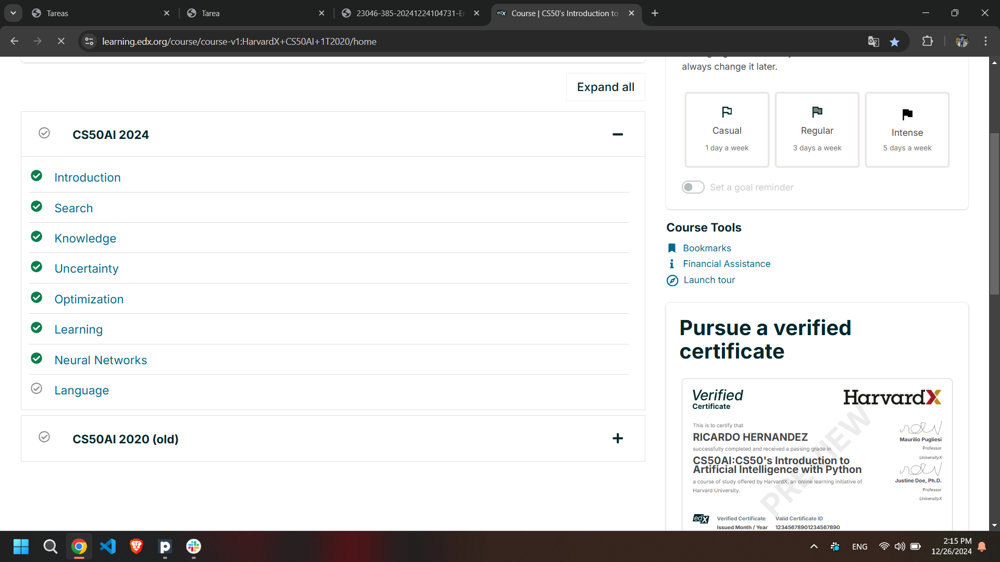

At this section, the instructor explained the course, and the general purpose of it.
Screeshot as evidence:
This sections contains:
In a search process, data is often stored in a node, a data structure that contains the following data:
A state
Its parent node, through which the current node was generated
The action that was applied to the state of the parent to get to the current node
The path cost from the initial state to this node
Nodes contain information that makes them very useful for the purposes of search algorithms. They contain a state, which can be checked using the goal test to see if it is the final state. If it is, the node’s path cost can be compared to other nodes’ path costs, which allows choosing the optimal solution. Once the node is chosen, by virtue of storing the parent node and the action that led from the parent to the current node, it is possible to trace back every step of the way from the initial state to this node, and this sequence of actions is the solution.
However, nodes are simply a data structure — they don’t search, they hold information. To actually search, we use the frontier, the mechanism that “manages” the nodes. The frontier starts by containing an initial state and an empty set of explored items, and then repeats the following actions until a solution is reached:
Repeat:
If the frontier is empty,
Stop. There is no solution to the problem.
Remove a node from the frontier. This is the node that will be considered.
If the node contains the goal state,
Return the solution. Stop.
Else,
* Expand the node (find all the new nodes that could be reached from this node), and add resulting nodes to the frontier.
* Add the current node to the explored set.
Depth-First Search
In the previous description of the frontier, one thing went unmentioned. At stage 2 in the pseudocode above, which node should be removed? This choice has implications on the quality of the solution and how fast it is achieved. There are multiple ways to go about the question of which nodes should be considered first, two of which can be represented by the data structures of stack (in depth-first search) and queue (in breadth-first search; and here is a cute cartoon demonstration of the difference between the two).
We start with the depth-first search (DFS) approach.
A depth-first search algorithm exhausts each one direction before trying another direction. In these cases, the frontier is managed as a stack data structure. The catchphrase you need to remember here is “last-in first-out.” After nodes are being added to the frontier, the first node to remove and consider is the last one to be added. This results in a search algorithm that goes as deep as possible in the first direction that gets in its way while leaving all other directions for later.
(An example from outside lecture: Take a situation where you are looking for your keys. In a depth-first search approach, if you choose to start with searching in your pants, you’d first go through every single pocket, emptying each pocket and going through the contents carefully. You will stop searching in your pants and start searching elsewhere only once you will have completely exhausted the search in every single pocket of your pants.)
Pros:
At best, this algorithm is the fastest. If it “lucks out” and always chooses the right path to the solution (by chance), then depth-first search takes the least possible time to get to a solution.
Cons:
It is possible that the found solution is not optimal.
At worst, this algorithm will explore every possible path before finding the solution, thus taking the longest possible time before reaching the solution.
Screeshot as evidence:
{kind=link}
{kind=link}